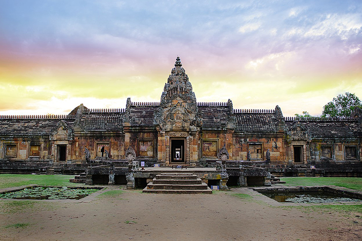
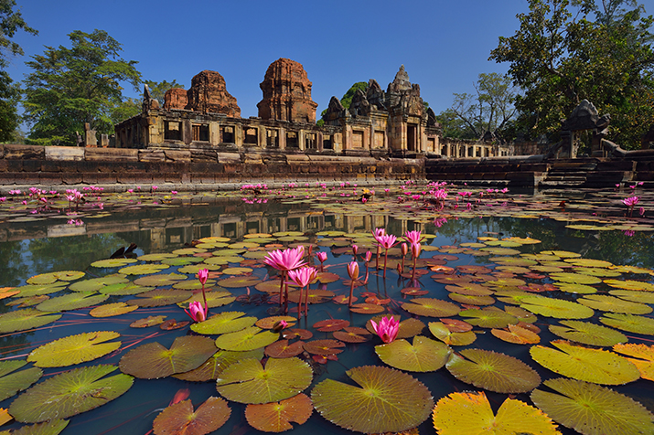
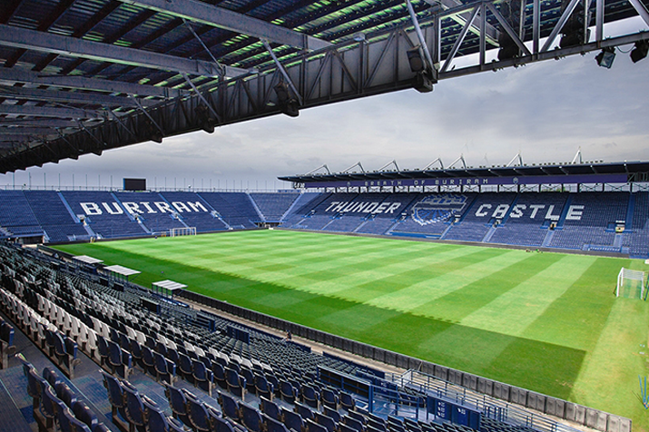
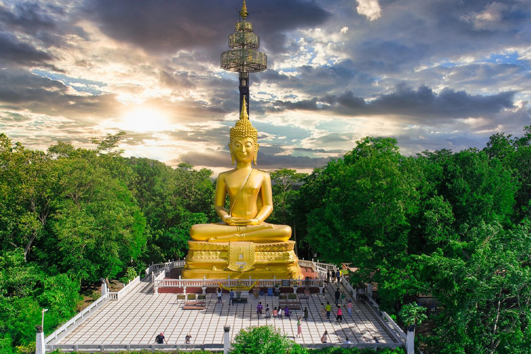

1. ปราสาทพนมรุ้ง
2. ปราสาทเมืองต่ำง
3. ช้าง อารีนา
4. วงเวียนอนุสาวรีย์รัชกาลที่ 1

5. วนอุทยานภูเขาไฟกระโดง

วนอุทยานภูเขาไฟกระโดง เป็นภูเขาไฟที่ดับสนิทแล้ว
มีปากปล่องทะลุเห็นได้ชัดเจน จึงกลายเป็นแหล่งท่องเที่ยว
และที่ศึกษาประวัติศาสตร์ ธรณีวิทยาและชีววิทยา
บนเขากระโดงยังมีโบราณสถานสมัยขอมที่สำคัญ
อ รอยพระพุทธบาทจำลอง และพระพุทธรูปขนาดใหญ่ ชื่อว่า “พระสุภัทรบพิตร”
พระพุทธรูปองค์ใหญ่คู่เมืองบุรีรัมย์ ประดิษฐานอยู่บนยอดเขา
ซึ่งเป็นที่เคารพสักการะของคนในท้องถิ่นอีกด้วย
นอกจากนี้ ยังมี สะพานพิสูจน์ศรัทธาสาธุชน หรือ บันไดนาคราช
ซึ่งสร้างขึ้นเมื่อปี 2512 เพื่อเป็นทางเดินขึ้น
ปสักการะบูชาพระสุภัทรบพิตรซึ่งตั้งอยู่บนยอดเขากระโดง จำนวน 297 ขั้น
ทำให้เกิดงานประเพณีขึ้นเขากระโดง
ในวันขึ้น 15 ค่ำ เดือน 5 ของทุกปี
และร่วมทำบูญงานประกวดกวนข้าวทิพย์–ตักบาตรรเทโวโรหณะ
ในช่วงก่อนวันออกพรรษาและวันออกพรรษาอีกด้วย